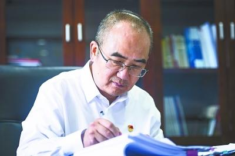
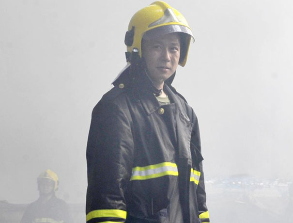
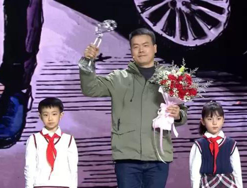
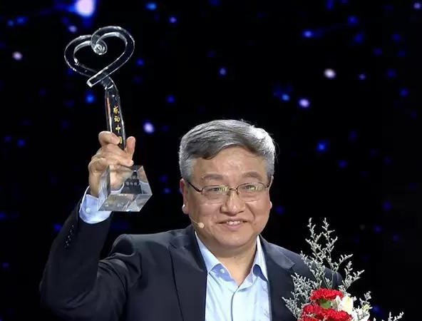
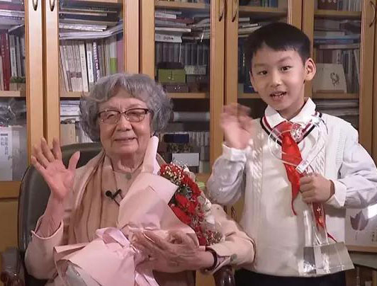

感动中国2020年度人物
感动中国2020年度人物

- 
-
张定宇:宇定光自发
【人物事迹】湖北省武汉市金银潭医院是最早接诊新冠患者的定点医院，收治病人全部为重症和危重症患者。院长张定宇隐瞒自己患渐冻症的病情，顾不上已感染新冠肺炎的妻子，一直坚守在抗疫一线。他说:“虽然有愧疚，但当时不需要做取舍，能帮助到别人，觉得很幸福!”...点击了解更多
- 
-
陈陆:男儿付死生
【人物事迹】2020年夏天，安徽庐江县遭受百年一遇洪灾。7月22日，庐江县石大圩漫堤决口，约6500人被洪水围困，情况危急。当天，安徽省庐江县消防救援大队政治教导员陈陆带领大队辗转5个乡镇，连续奋战，成功转移群众2665人。在营救过程中，决口突然扩大，救援队员所乘橡皮艇被卷入激流漩涡侧翻，年仅36岁的陈陆英勇牺牲。“放心，我会守好庐江”，是陈陆对父亲的承诺，也是他用生命兑现的对国家和人民的承诺...点击了解更多
-
张桂梅:素心托高洁
【人物事迹】2002年，在云南儿童之家工作的张桂梅看到了很多农村贫困家庭的不幸，她希望创办一所免费女子高中，彻底解决山区贫困问题。她四处奔波筹集资金，努力了五年也才筹集到1万元。经多方努力，2008年，华坪女子高级中学成立，这是全国唯一一所免费女高，专门供贫困家庭的女孩读书。建校12年来，已有1804名大山里的女孩从这里走进大学完成学业，在各行各业做贡献...点击了解更多
-
万佐成、熊庚香夫妇:炊香万灶烟
【人物事迹】从肿瘤医院旁小巷里的油条摊位到炒1个菜收1元的“抗癌厨房”，18年来，江西南昌夫妇万佐成和熊庚香与癌症病人相伴，用爱心守护他们。如今，已近70的他们，依然凌晨四点起床备好炉火，迎接每一天的新老客人，365天从不离开。这对夫妻的初心十分简单:“有的病治不好了，但能让病人吃好一些，家屋的遗憾也能少一些。”...点击了解更多
-
王海:为国击豺狼
【人物事迹】抗美援朝时，空军原司令员王海上将率领人民空军年轻的第一大队，与号称“世界王牌”的美国空军激战80余次，击落敌机29架，本人击落击伤敌机9架。因功勋卓著，该大队后来被命名为“王海大队”。在中国人民革命军事博物馆，至今仍陈列着一架绘有9颗红星的米格-15歼击机，这就是王海当年驾驶过的功勋飞机。...点击了解更多
- 
-
汪勇:芳草递春风
【人物事迹】2020年除夕，武汉快递员汪勇说服家人，赶到金银潭医院送护士回家。1月25日到4月8日，他每天只睡4小时:一个人能力有限，就发动朋友圈，解决医护人员出行;为让医护随时吃上免费热饭，他又多方联络解决需求。...点击了解更多
- 
-
谢军:北斗灿繁星
【人物事迹】2020年6月，北斗三号全球卫星导航系统的最后一颗卫星发射成功，这代表着北斗全球卫星导航系统星座部署全面完成。北斗三号卫星研制中，谢军团队创造性地实现了卫星批量化生产，仅用1年零14天将19颗导航卫星送入太空，创造了航天发射史的新纪录!...点击了解更多
- 
-
叶嘉莹:蕴玉抱清辉
【人物事迹】20世纪70年代，已是多所名牌大学教授的叶嘉莹，愿不要任何报酬回国教书。如今，90多岁高龄的她仍坚持讲学，还捐出3500多万元支持中华优秀传统文化研究。她用一生培养了大批中国传统文化和古典文学人才。叶嘉莹说:“人的精神品格能够提升，提升以后，他就有他自己内心的一份快乐。他不会每天总是为追求现实的那一点金钱之类的东西而丢掉人生最宝贵的价值。"...点击了解更多